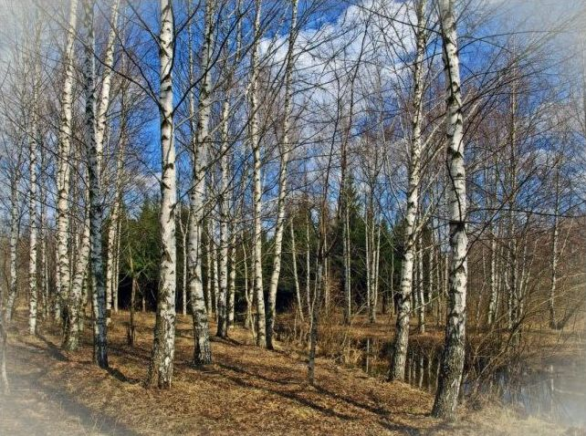
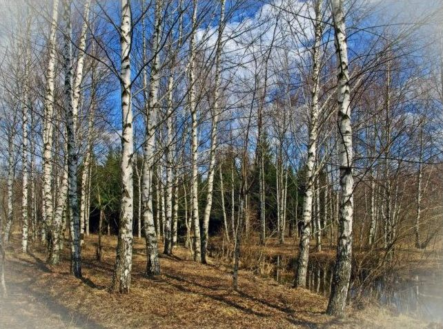

Весна все же наступает!
Хоть оттепели и сменяются заморозками, земля приняла в себя остатки влажного снега.
До конца апреля, начала мая продолжается сокодвижение - природа щедро делится березовым соком!
Приглашаем вас и ваших друзей в Вотчина Country Club!
С 1 по 11 мая в поселке период открытых дверей:
- мы познакомим вас с поселком
- проконсультируем по строительным и техническим вопросам
- угостим березовым соком, желающие могут самостоятельно собрать сок - мы покажем места и секреты
- желающие могут приобрести продукты с ЭКОФЕРМЫ поселка
Сообщите, пожалуйста о своем визите здесь
Березовый сок – настоящий кладезь микроэлементов, витаминов, полисахаров, белков, кислот и ароматических и дубильных веществ.
Казалось бы и на вкус не замысловат и порой не сладкий совсем.
Березовый сок обладает способностью нормализовать микрофлору в желудке и наладить пищеварение. Излишнюю кислотность уберет, недостаток - добавит. Еще он обладает способностью растворять мочевые камни фосфатного и карбонатного происхождения в почках и печени. Так же полезен березовый сок как профилактическое общеукрепляющее средство и для лечения заболевания легких.
Как косметическое средство березовый сок употребляют издревле.
Очень полезно по утрам протирать лицо кусочком замороженного березового сока. Кожа не только получает термическое стимулирование, но и микроэлементы, питающие ее. Так же очень полезно мыть березовым соком голову, он очень стимулирует рост волос, укрепляет их корни, делает волосы густыми и пушистыми, снимает излишнюю жирность.
Сбор березового сока можно начинать практически сразу после весеннего равноденствия. На наиболее прогреваемых солнцем местах береза просыпается даже если вокруг еще лежит снег.
Что бы определить, начало сокодвижения достаточно выйти в лес после 20-25 марта и сделать тонким шилом укол на березе толщиной в руку. Если сок пошел - в точке прокола тут же выступит капля сока. И можно приступать к его сбору и заготовке.
Сок будет идти с конца марта до середины - конца апреля. По мере прогревания леса следует перемещаться в глубь чащи, туда, где лес просыпается позже, чем на южной опушке.
Как собирать березовый сок.
Что бы получить от дерева березовый сок, но при этом не нанести березе ощутимого вреда (вред мы все равно нанесем, но надо стараться его минимизировать, что бы не погубить дерево зря), следует выполнять простые правила.
1) Не используйте топор! Лучше использовать дрель со сверлом 5-10 мм. Просверленная «лунка» в стволе зарастает практически бесследно. На следующий год вы не обнаружите даже следов своего прошлогоднего сверления!
2) Не стремитесь «слить» с одного дерева весь сок! Дерево готово потерять часть сока, и оно его компенсирует. Но если вы его полностью обескровите, оно засохнет. Лучше надсверлить 5-10 деревьев и с каждого из них брать по литру сока в сутки, чем с одного брать по 5 литров, обрекая его на гибель.
3) После окончания сбора сока постарайтесь максимально помочь дереву залечить нанесенную ранку. Для этого после окончания сбора сока замажьте ее садовым варом или забейте в отверстие деревянную пробочку. Тогда «лунка» внутри дерева быстро зарастет.
Приезжайте, насладитесь дарами леса Вотчина Country Club
Регистрация на мероприятие
 

Error: Undefined variable: category_text File: /var/www/votchina.su/data/www/votchina.ru/templates/template-news.php (65)